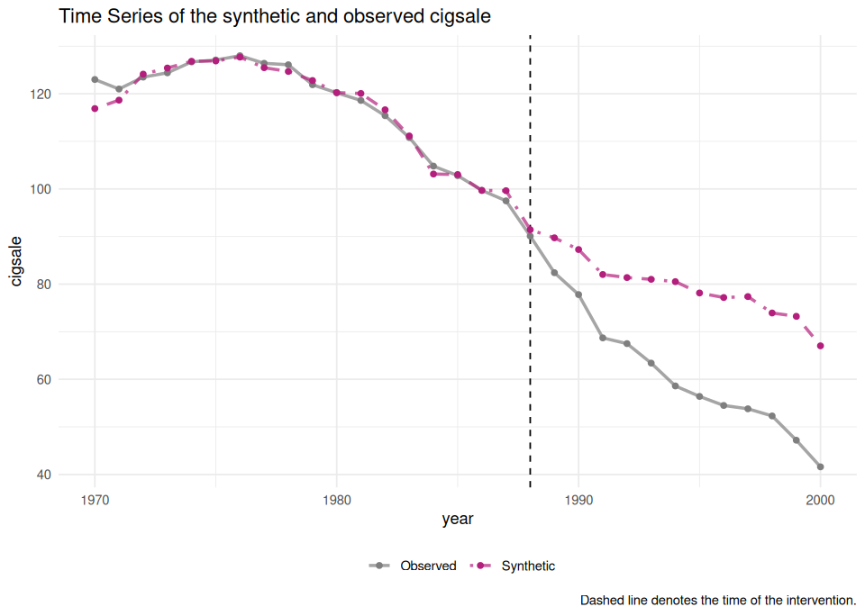
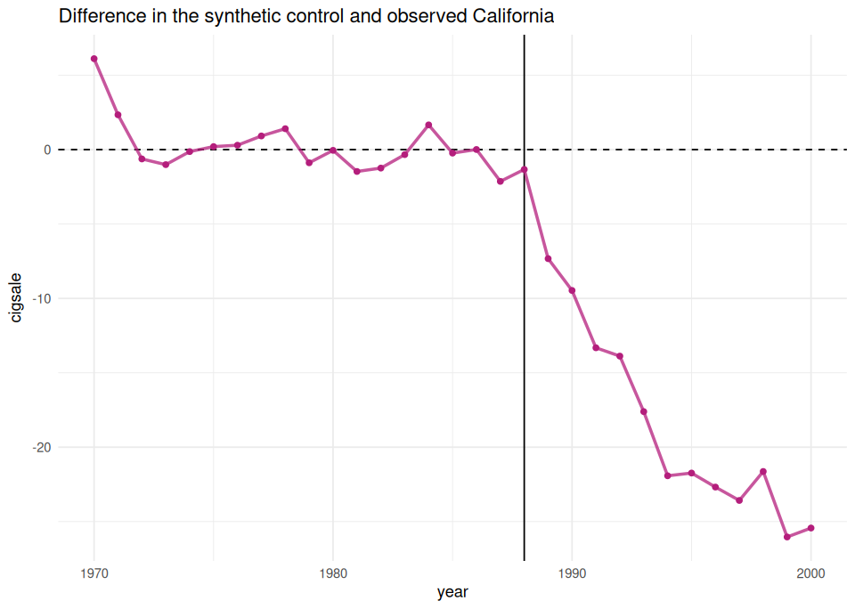

Lab: Proposition 99 With tidysynth#
Use the R kernel. Keep the supplied data/ folder beside this notebook. Run cells in order after installing the documented R environment. Data loading is entirely local.
How To Use This Page#
Use this page as the first full SCM application lab.
Keep the Synthetic Control overview open in another tab.
Use the California Proposition 99 notes when you want the paper-level rationale behind each design step.
Do not rush to the post-treatment plot. The donor pool, predictors, and pre-treatment fit are the actual argument.
End with a design judgment about whether California’s synthetic comparison looks credible enough to interpret.
The code is shown but not executed when the site is rendered. That keeps the page readable while preserving a runnable workflow for teaching and self-study.
Training Goal#
Turn the canonical Proposition 99 application into a repeatable tidysynth workflow:
define the treated unit and intervention date
build a donor pool that tries to stay plausibly untreated
choose predictors and lagged outcomes that discipline pre-treatment fit
inspect donor weights, balance, path fit, and placebo-style comparisons
explain why this is a design-and-diagnostics workflow rather than just a nice graph
Dataset At A Glance#
This lab uses tidysynth::smoking, the bundled state-year panel tied to California’s tobacco-control program.
Treated unit: California
Intervention anchor:
1988in the teaching implementation, so1989onward is interpreted as the post-treatment periodOutcome: per-capita cigarette sales (
cigsale)Core predictors: income, cigarette price, beer consumption, age structure, and lagged smoking outcomes
Main value: this is the cleanest benchmark case for teaching a full end-to-end SCM workflow in a tidy grammar
What To Hand Back#
By the end of the lab, you should be able to report:
which states were excluded before estimation and why
which predictors anchor the fit exercise
which donor states receive positive or near-positive weight
whether California’s pre-treatment fit is strong enough to make the
1989onward gap meaningfulwhether the placebo diagnostics reinforce the result or only partially reassure you
Step 1: Load Packages And Inspect The Panel#
options(repr.plot.width = 8, repr.plot.height = 4.8)
data_helpers <- c("data/load-data.R", "../data/load-data.R", "docs/labs/data/load-data.R")
data_helpers <- data_helpers[file.exists(data_helpers)]
if (!length(data_helpers)) stop("Extract the complete lab ZIP, including its data folder, before running.")
source(data_helpers[[1]])
options(repr.plot.width = 8, repr.plot.height = 4.8)
required_packages <- c(
"tidysynth",
"dplyr",
"ggplot2",
"tibble",
"purrr"
)
missing_packages <- required_packages[!vapply(
required_packages,
requireNamespace,
logical(1),
quietly = TRUE
)]
if (length(missing_packages) > 0) {
stop("Install the documented R environment first; missing: ", paste(missing_packages, collapse=", "), call.=FALSE)
}
invisible(lapply(required_packages, library, character.only = TRUE))
smoking <- qed_data("smoking")
smoking |>
glimpse()
Attaching package: ‘dplyr’
The following objects are masked from ‘package:stats’:
filter, lag
The following objects are masked from ‘package:base’:
intersect, setdiff, setequal, union
Rows: 1,209
Columns: 7
$ state <chr> "Rhode Island", "Tennessee", "Indiana", "Nevada", "Louisiana…
$ year <dbl> 1970, 1970, 1970, 1970, 1970, 1970, 1970, 1970, 1970, 1970, …
$ cigsale <dbl> 123.9, 99.8, 134.6, 189.5, 115.9, 108.4, 265.7, 93.8, 100.3,…
$ lnincome <dbl> NA, NA, NA, NA, NA, NA, NA, NA, NA, NA, NA, NA, NA, NA, NA, …
$ beer <dbl> NA, NA, NA, NA, NA, NA, NA, NA, NA, NA, NA, NA, NA, NA, NA, …
$ age15to24 <dbl> 0.1831579, 0.1780438, 0.1765159, 0.1615542, 0.1851852, 0.175…
$ retprice <dbl> 39.3, 39.9, 30.6, 38.9, 34.3, 38.4, 31.4, 37.3, 36.7, 28.8, …
Checkpoint:
The data are already in tidy long format.
Every row is a state-year observation, which makes the
tidysynthpipeline easier to read than the original matrix workflow.
Step 2: Define The Intervention And Donor Exclusions#
Following the canonical Proposition 99 design, exclude states that adopted large tobacco-control programs during the post period, states with very large cigarette-tax increases, and the District of Columbia.
options(repr.plot.width = 8, repr.plot.height = 4.8)
treated_state <- "California"
intervention_year <- 1988
excluded_states <- c(
"Alaska",
"Hawaii",
"Maryland",
"Massachusetts",
"Michigan",
"New Jersey",
"New York",
"Washington",
"District of Columbia"
)
analysis_data <- smoking |>
filter(year <= 2000) |>
filter(!state %in% excluded_states)
analysis_data |>
count(state, sort = TRUE)
| state | n |
|---|---|
| <chr> | <int> |
| Alabama | 31 |
| Arkansas | 31 |
| California | 31 |
| Colorado | 31 |
| Connecticut | 31 |
| Delaware | 31 |
| Georgia | 31 |
| Idaho | 31 |
| Illinois | 31 |
| Indiana | 31 |
| Iowa | 31 |
| Kansas | 31 |
| Kentucky | 31 |
| Louisiana | 31 |
| Maine | 31 |
| Minnesota | 31 |
| Mississippi | 31 |
| Missouri | 31 |
| Montana | 31 |
| Nebraska | 31 |
| Nevada | 31 |
| New Hampshire | 31 |
| New Mexico | 31 |
| North Carolina | 31 |
| North Dakota | 31 |
| Ohio | 31 |
| Oklahoma | 31 |
| Pennsylvania | 31 |
| Rhode Island | 31 |
| South Carolina | 31 |
| South Dakota | 31 |
| Tennessee | 31 |
| Texas | 31 |
| Utah | 31 |
| Vermont | 31 |
| Virginia | 31 |
| West Virginia | 31 |
| Wisconsin | 31 |
| Wyoming | 31 |
What to discuss:
donor-pool construction is part of identification, not housekeeping
the point is not to find the biggest donor pool, but the most defensible untreated comparison set
if contamination remains plausible even after exclusions, that is a design limitation you should say out loud
Step 3: Inspect The Raw California Trend#
options(repr.plot.width = 8, repr.plot.height = 5.5)
analysis_data |>
mutate(group = if_else(state == treated_state, "California", "Donor pool")) |>
group_by(group, year) |>
summarise(cigsale = mean(cigsale, na.rm = TRUE), .groups = "drop") |>
ggplot(aes(x = year, y = cigsale, color = group)) +
geom_line(linewidth = 1.1) +
geom_vline(xintercept = intervention_year, linetype = 2, color = "gray40") +
labs(
x = NULL,
y = "Per-capita cigarette sales",
color = NULL
) +
theme_minimal(base_size = 12)

Checkpoint:
A simple donor-pool average is not the SCM counterfactual.
This first plot is only a benchmark for why a weighted synthetic comparison is needed.
Step 4: Build The Synthetic-Control Object#
options(repr.plot.width = 8, repr.plot.height = 4.8)
smoking_out <- analysis_data |>
synthetic_control(
outcome = cigsale,
unit = state,
time = year,
i_unit = treated_state,
i_time = intervention_year,
generate_placebos = TRUE
) |>
generate_predictor(
time_window = 1980:1988,
lnincome = mean(lnincome, na.rm = TRUE),
retprice = mean(retprice, na.rm = TRUE),
age15to24 = mean(age15to24, na.rm = TRUE)
) |>
generate_predictor(
time_window = 1984:1988,
beer = mean(beer, na.rm = TRUE)
) |>
generate_predictor(
time_window = 1975,
cigsale_1975 = cigsale
) |>
generate_predictor(
time_window = 1980,
cigsale_1980 = cigsale
) |>
generate_predictor(
time_window = 1988,
cigsale_1988 = cigsale
) |>
generate_weights(
optimization_window = 1970:1988,
Margin.ipop = 0.02,
Sigf.ipop = 7,
Bound.ipop = 6
) |>
generate_control()
This pipeline does the same design work as the classical Synth setup, but in a grammar that is easier to teach line by line.
Step 5: Inspect Balance Before You Look At Effects#
options(repr.plot.width = 8, repr.plot.height = 4.8)
balance_tbl <- smoking_out |>
grab_balance_table()
balance_tbl
| variable | California | synthetic_California | donor_sample |
|---|---|---|---|
| <chr> | <dbl> | <dbl> | <dbl> |
| age15to24 | 0.1735324 | 0.1738544 | 0.1725101 |
| lnincome | 10.0765586 | 9.8591206 | 9.8291968 |
| retprice | 89.4222234 | 89.3184422 | 87.2660819 |
| beer | 24.2800003 | 24.0954963 | 23.6552632 |
| cigsale_1975 | 127.0999985 | 126.8968367 | 136.9315790 |
| cigsale_1980 | 120.1999969 | 120.2482841 | 138.0894737 |
| cigsale_1988 | 90.0999985 | 91.4317770 | 113.8236837 |
What to look for:
the synthetic California column should sit close to observed California on the key predictors
the donor-pool average is the benchmark you are trying to beat
weak lagged-outcome balance is a warning sign because those lags are carrying a lot of the design discipline
Step 6: Inspect Donor Weights#
options(repr.plot.width = 8, repr.plot.height = 4.8)
weights_tbl <- smoking_out |>
grab_unit_weights() |>
arrange(desc(weight))
weights_tbl
| unit | weight |
|---|---|
| <chr> | <dbl> |
| Utah | 3.432236e-01 |
| Nevada | 2.357516e-01 |
| Montana | 1.819706e-01 |
| Colorado | 1.746846e-01 |
| Connecticut | 6.241991e-02 |
| Idaho | 5.198364e-04 |
| New Mexico | 3.359019e-04 |
| Minnesota | 3.307624e-04 |
| Wisconsin | 1.492862e-04 |
| Nebraska | 1.088187e-04 |
| Illinois | 5.236910e-05 |
| Pennsylvania | 3.912883e-05 |
| Iowa | 3.504183e-05 |
| Kansas | 3.291341e-05 |
| South Dakota | 3.186042e-05 |
| Wyoming | 2.302557e-05 |
| Virginia | 2.243895e-05 |
| Ohio | 2.069633e-05 |
| Missouri | 1.892089e-05 |
| West Virginia | 1.890564e-05 |
| Indiana | 1.701817e-05 |
| Georgia | 1.670204e-05 |
| Delaware | 1.589743e-05 |
| Maine | 1.565045e-05 |
| Rhode Island | 1.564743e-05 |
| South Carolina | 1.555528e-05 |
| Alabama | 1.542755e-05 |
| Tennessee | 1.516734e-05 |
| Mississippi | 1.354089e-05 |
| Louisiana | 1.287011e-05 |
| Arkansas | 1.279424e-05 |
| Vermont | 1.175604e-05 |
| Oklahoma | 9.332901e-06 |
| North Carolina | 8.077040e-06 |
| North Dakota | 7.871549e-06 |
| Kentucky | 6.208548e-06 |
| Texas | 2.353868e-07 |
| New Hampshire | 4.906346e-09 |
Checkpoint:
donor weights are part of the result, not an appendix
if the synthetic control is built from a small set of plausible states, the counterfactual becomes easier to inspect and defend
Step 7: Plot Observed And Synthetic California#
options(repr.plot.width = 8, repr.plot.height = 5.7)
smoking_out |>
plot_trends()
Warning message:
“Using `size` aesthetic for lines was deprecated in ggplot2 3.4.0.
ℹ Please use `linewidth` instead.
ℹ The deprecated feature was likely used in the tidysynth package.
Please report the issue to the authors.”
{kind=link}

options(repr.plot.width = 8, repr.plot.height = 5.7)
smoking_out |>
plot_differences()
Ignoring unknown labels:
• colour : ""
• linetype : ""
{kind=link}

What to discuss:
the trend plot asks whether California and synthetic California line up closely through
1988the difference plot asks whether the post-treatment divergence is both visible and treatment-timed
a dramatic post-treatment gap is not enough if the pre-treatment fit is loose
Step 8: Make The Gap Series Inspectable#
options(repr.plot.width = 8, repr.plot.height = 4.8)
gap_tbl <- smoking_out |>
grab_synthetic_control() |>
transmute(
year = time_unit,
observed = real_y,
synthetic = synth_y,
gap = observed - synthetic
)
gap_tbl
| year | observed | synthetic | gap |
|---|---|---|---|
| <dbl> | <dbl> | <dbl> | <dbl> |
| 1970 | 123.0 | 116.88656 | 6.113435728 |
| 1971 | 121.0 | 118.65972 | 2.340282054 |
| 1972 | 123.5 | 124.12621 | -0.626211650 |
| 1973 | 124.4 | 125.40948 | -1.009482644 |
| 1974 | 126.7 | 126.83238 | -0.132385606 |
| 1975 | 127.1 | 126.89684 | 0.203161760 |
| 1976 | 128.0 | 127.70405 | 0.295948336 |
| 1977 | 126.4 | 125.48131 | 0.918696172 |
| 1978 | 126.1 | 124.69401 | 1.405987977 |
| 1979 | 121.9 | 122.78549 | -0.885487810 |
| 1980 | 120.2 | 120.24828 | -0.048287162 |
| 1981 | 118.6 | 120.06867 | -1.468674330 |
| 1982 | 115.4 | 116.64125 | -1.241252248 |
| 1983 | 110.8 | 111.13579 | -0.335784752 |
| 1984 | 104.8 | 103.13737 | 1.662637526 |
| 1985 | 102.8 | 103.03343 | -0.233428982 |
| 1986 | 99.7 | 99.69135 | 0.008647602 |
| 1987 | 97.5 | 99.63393 | -2.133925646 |
| 1988 | 90.1 | 91.43178 | -1.331778566 |
| 1989 | 82.4 | 89.72870 | -7.328698635 |
| 1990 | 77.8 | 87.26686 | -9.466857842 |
| 1991 | 68.7 | 82.02012 | -13.320121312 |
| 1992 | 67.5 | 81.37890 | -13.878899382 |
| 1993 | 63.4 | 81.00953 | -17.609527120 |
| 1994 | 58.6 | 80.52269 | -21.922687717 |
| 1995 | 56.4 | 78.13891 | -21.738911243 |
| 1996 | 54.5 | 77.18214 | -22.682136580 |
| 1997 | 53.8 | 77.38087 | -23.580870019 |
| 1998 | 52.3 | 73.93351 | -21.633508123 |
| 1999 | 47.2 | 73.23693 | -26.036933226 |
| 2000 | 41.6 | 67.03456 | -25.434558654 |
This is a useful discipline step. Never rely only on the plot when you can inspect the actual treated-versus-synthetic series directly.
Step 9: Add Placebo-By-Unit Diagnostics#
options(repr.plot.width = 8, repr.plot.height = 6)
smoking_out |>
plot_placebos()
{kind=link}
options(repr.plot.width = 8, repr.plot.height = 4.8)
mspe_tbl <- smoking_out |>
grab_significance()
mspe_tbl
| unit_name | type | pre_mspe | post_mspe | mspe_ratio | rank | fishers_exact_pvalue | z_score |
|---|---|---|---|---|---|---|---|
| <chr> | <chr> | <dbl> | <dbl> | <dbl> | <int> | <dbl> | <dbl> |
| California | Treated | 3.209078 | 386.670395 | 120.49266575 | 1 | 0.02564103 | 5.28463350 |
| Georgia | Donor | 3.596617 | 163.754891 | 45.53025775 | 2 | 0.05128205 | 1.65794140 |
| Indiana | Donor | 22.942896 | 765.701568 | 33.37423391 | 3 | 0.07692308 | 1.06983122 |
| West Virginia | Donor | 9.715525 | 290.765340 | 29.92790873 | 4 | 0.10256410 | 0.90309751 |
| Wisconsin | Donor | 10.700115 | 252.680143 | 23.61471335 | 5 | 0.12820513 | 0.59766421 |
| Missouri | Donor | 2.771080 | 56.722349 | 20.46940438 | 6 | 0.15384615 | 0.44549371 |
| South Carolina | Donor | 10.057820 | 193.594590 | 19.24816600 | 7 | 0.17948718 | 0.38641002 |
| Tennessee | Donor | 10.499417 | 167.397829 | 15.94353557 | 8 | 0.20512821 | 0.22653152 |
| Texas | Donor | 14.195961 | 223.047027 | 15.71200597 | 9 | 0.23076923 | 0.21533009 |
| Oklahoma | Donor | 17.433463 | 187.209682 | 10.73852544 | 10 | 0.25641026 | -0.02528762 |
| Virginia | Donor | 9.419305 | 99.069842 | 10.51774473 | 11 | 0.28205128 | -0.03596902 |
| Illinois | Donor | 6.646887 | 63.925905 | 9.61741961 | 12 | 0.30769231 | -0.07952688 |
| New Mexico | Donor | 9.850115 | 85.590121 | 8.68925074 | 13 | 0.33333333 | -0.12443182 |
| Montana | Donor | 7.167600 | 59.294434 | 8.27256508 | 14 | 0.35897436 | -0.14459114 |
| Louisiana | Donor | 6.881293 | 49.243030 | 7.15607235 | 15 | 0.38461538 | -0.19860722 |
| Idaho | Donor | 11.963334 | 64.395896 | 5.38277153 | 16 | 0.41025641 | -0.28439977 |
| Rhode Island | Donor | 173.213399 | 890.199395 | 5.13932177 | 17 | 0.43589744 | -0.29617790 |
| North Carolina | Donor | 204.496057 | 951.006530 | 4.65048834 | 18 | 0.46153846 | -0.31982773 |
| Maine | Donor | 17.299958 | 71.525342 | 4.13442287 | 19 | 0.48717949 | -0.34479505 |
| Nevada | Donor | 118.857187 | 490.149607 | 4.12385335 | 20 | 0.51282051 | -0.34530641 |
| South Dakota | Donor | 9.023588 | 36.946073 | 4.09438828 | 21 | 0.53846154 | -0.34673193 |
| Nebraska | Donor | 5.763224 | 23.088943 | 4.00625448 | 22 | 0.56410256 | -0.35099586 |
| Minnesota | Donor | 17.245587 | 68.260167 | 3.95812363 | 23 | 0.58974359 | -0.35332444 |
| Mississippi | Donor | 5.583961 | 21.661954 | 3.87931661 | 24 | 0.61538462 | -0.35713713 |
| Delaware | Donor | 233.251974 | 887.197779 | 3.80360245 | 25 | 0.64102564 | -0.36080019 |
| Iowa | Donor | 15.882287 | 49.911672 | 3.14259975 | 26 | 0.66666667 | -0.39277960 |
| Arkansas | Donor | 11.145103 | 23.828251 | 2.13800180 | 27 | 0.69230769 | -0.44138219 |
| Kentucky | Donor | 578.161013 | 1112.256404 | 1.92378313 | 28 | 0.71794872 | -0.45174612 |
| Vermont | Donor | 103.720663 | 177.191089 | 1.70834898 | 29 | 0.74358974 | -0.46216886 |
| Pennsylvania | Donor | 5.053408 | 6.279961 | 1.24271811 | 30 | 0.76923077 | -0.48469615 |
| Connecticut | Donor | 33.108932 | 37.658429 | 1.13740995 | 31 | 0.79487179 | -0.48979097 |
| Kansas | Donor | 14.921662 | 16.935327 | 1.13494914 | 32 | 0.82051282 | -0.48991002 |
| Alabama | Donor | 8.385283 | 9.446242 | 1.12652629 | 33 | 0.84615385 | -0.49031752 |
| Colorado | Donor | 47.166353 | 47.719553 | 1.01172870 | 34 | 0.87179487 | -0.49587145 |
| North Dakota | Donor | 18.684934 | 13.772365 | 0.73708393 | 35 | 0.89743590 | -0.50915880 |
| Ohio | Donor | 22.874571 | 16.858782 | 0.73700977 | 36 | 0.92307692 | -0.50916239 |
| Utah | Donor | 593.765136 | 223.276472 | 0.37603500 | 37 | 0.94871795 | -0.52662640 |
| Wyoming | Donor | 112.717401 | 23.039773 | 0.20440298 | 38 | 0.97435897 | -0.53492998 |
| New Hampshire | Donor | 3485.934544 | 312.451857 | 0.08963216 | 39 | 1.00000000 | -0.54048261 |
How to read this:
placebos ask whether California’s post-treatment divergence looks unusually large relative to donor states reassigned as if they were treated
this is diagnostic reassurance, not a substitute for a credible donor pool
if many placebo units fit terribly before treatment, interpret the ranking with caution
Step 10: Write The Design Judgment#
Use the outputs above to answer:
Why is California better suited to SCM than a simple treated-versus-rest-of-US comparison?
Which donor states actually build synthetic California?
Is the pre-treatment fit strong enough that the
1989onward gap is worth interpreting?Do the placebo diagnostics strengthen the case, or do they mainly show how much the result depends on fit quality?
Next Step#
Move next to the augmented SCM lab, where the main question shifts from “how do I run classical SCM?” to “what should I do when classical fit is visibly weak?”